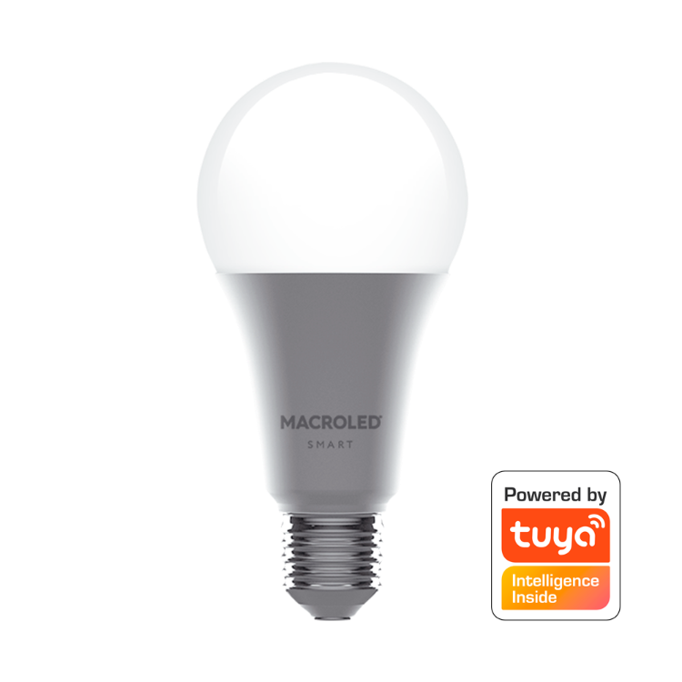

Lámparas


Poseemos dos modelos distintos de lamparas que son el reemplazo directo de las lamparas mas comunmente encontradas en el hogar, las e27 de bulbo y las dicroicas con zocalo GU10.
A esto se le suman los reflectores smart, con las mismas prestaciones que las lamparas, en potencia de 20W y 50W
Lo positivo
- Bajo costo inicial
- No necesitamos de un electricista para realizar la instalacion
- Nos permiten controlar encendido, apagado, timer, encendido/apagado automatico, control de escena,color y brillo desde nuestro dispositivo andrioid o ios.
- Son RGB-W, lo que significa que tiene leds especificos RGB y otros unicamente blancos lo que nos brinda un color blanco puro.
Lo Negativo
- Si bien el costo inicial es bajo, cuando se quema la lampara nos vemos obligados a reemplazarla por otra lampara smart para conservar las funcionalidades
- Tiene que estar la tecla fisica de esa luminaria prendida, si algun integrante del hogar apaga ese interruptor, no podemos activar esa lampara desde nuestro dispositivo
- Ante un corte de energia si el interruptor esta encendido en cuanto el servicio retorna la lampara se prende, pudiendo generar que se prenda a las 3am cuando el servicio retorna
| Caracteristicas | Bulbo E27 | Dicroica GU10 | Reflector 20W | Reflector 50W |
|---|---|---|---|---|
| Tension | 100-220VCA | |||
| Frecuencia | 50-60Hz | |||
| Corriente | 105mA | 50mA | 152mA | 379mA |
| Potencia | 12W | 5W | 20W | 50W |
| Factor de potencia | 0.5 | 0.6 | ||
| CRI | 80 | |||
| Ángulo de apertura | 200º | 38º | 95º | |
| Proteccion IP | IP20 | IP65 | ||
| Proteccion IK | IK00 | IK08 | ||
| Compatibilidad | Ecosistema Tuya IoT | |||
| Conexion | Bluetooth-WiFi 2.4GHz | |||
| Colores | RGB Blanco frio/calido | |||
| Flujo luminoso RGB | 400-700 nm | |||
| Flujo luminoso 2700K | 945lm | 360lm | Sin datos | |
| Flujo luminoso 4500K | 1000lm | 380lm | Sin datos | |
| Flujo luminoso 6500K | 1050lm | 400lm | Sin datos | |
| Temperatura de trabajo | -25º/65º | -25º/45º | ||
| Vida útil | 25.000hs | |||
| ON/OFF switch | 15.000 ciclos | |||
| Garantìa | 2 años | 3 años | ||